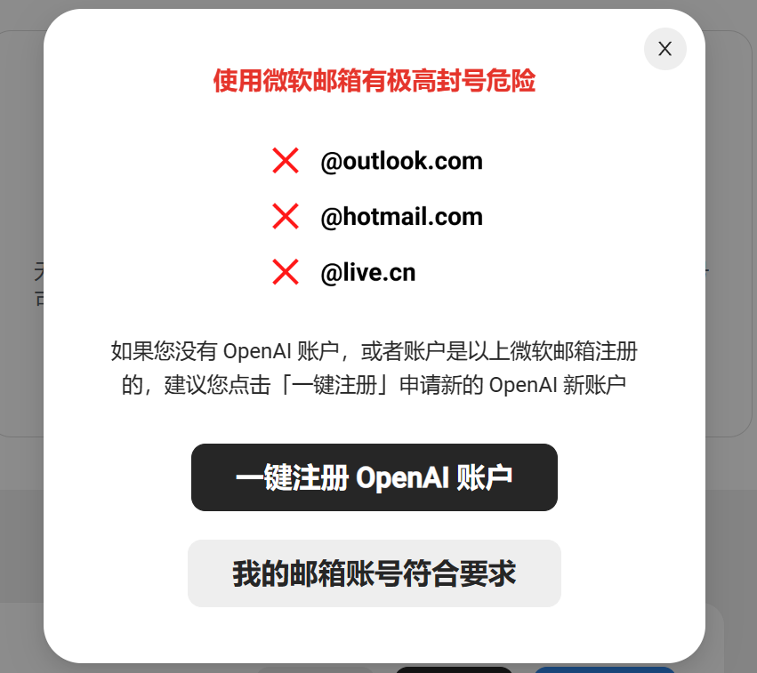

如何购买ChatGPT？如何升级ChatGPT Plus？使用虚拟信用卡购买ChatGPT的指南
随着 AIGC 的浪潮席卷而来，ChatGPT 的火爆程度日益高涨，相信大家对它的名字早已耳熟能详。它不仅功能强大，而且关键的是账户永久免费使用（请注意：ChatGPT 3.5官方账户确实是永久免费的，任何需要充值才能提问或者提问次数有限制的都是盗版山寨产品）。然而，ChatGPT 并不支持国内网络使用，限制了许多新人对其增加了解，不知道如何才能拥有账号。本文将一步一步向大家解释，ChatGPT 是什么，以及如何使用和注册账号。
2024最新教程已经不需要手机号，参考这篇文章: ChatGPT账号注册，无需手机号验证码
如果觉得自己注册比较麻烦，或者想要升级Plus，可以接着往下看。
访问 ChatGPT 或者 OpenAI 对网络有较高要求，有需要的可以参考这篇文章：网络加速快速指南 一键访问ChatGPT OpenAI
ChatGPT 是什么
ChatGPT 是由 OpenAI 开发的一款大型语言模型，擅长处理各种自然语言任务，如回答问题、生成文本和进行对话等。
简而言之，ChatGPT 是最新一代的通用超强 AI，拥有庞大的知识库，能够回答形形色色的问题。无论您有什么疑问，向 ChatGPT 提问就能得到解答！
ChatGPT 自2022年11月30日发布以来，仅用了五天时间，全球用户数就突破了100万大关。
ChatGPT Plus提供比标准版本更快的速度、增强的性能，并且优先体验新功能。然而，在GPT4的付费订阅过程中，许多用户在使用信用卡支付时遇到障碍。
常见的问题包括OpenAI系统拒绝接受信用卡，建议改用借记卡支付。这里是一些常见的错误提示：
- Your credit card was declined.Try paying with a debit card instead.
- 您的信用卡被拒绝了。请尝试用借记卡支付。
- 您的金融卡已被拒绝。
- 您拒绝了。请尝试用签账卡支付。
- 我们未能验证您的支付方式。请选择另一支付方式并重试。
一、ChatGPT Plus信用卡付款被拒的原因
信用卡付款失败可能由以下原因导致：
- 信用卡余额不足。
- 更换IP地址、支付卡或账单地址可能无法成功绑定卡片。
- OpenAI可能因用户违反政策或从高风险IP地址访问服务而拒绝提供付费服务。
二、解决方案
一种有效的解决方法是申请一张新的虚拟信用卡，这可以绕开风控系统。在某些情况下，甚至建议重新注册ChatGPT账号。如果虚拟卡支付仍存在问题，可以考虑重新注册GPT账号。
三、使用虚拟信用卡进行注册的教程
3.1 注册虚拟信用卡
市面上有多个虚拟卡平台，推荐一个用户友好、操作简便的平台，全流程仅需约2分钟。这对缺乏国外信用卡的用户来说是一个完美的解决方案。注册链接：
这是一家国内公司，通过支付宝实名认证，安全无忧。
开通的是有效期1年或2年的虚拟信用卡，需要开卡费，大约 70元RMB，每天成本不到 1.5 毛钱，不光可以用于 ChatGPT，也可以用于海淘等其他用途。其他费用无，根据个人需求充值。
关键是，如果没有消费成功，可以随时提现余额到支付宝。
3.2 使用虚拟信用卡购买ChatGPT账号
（PS：需要快捷注册账号的可以参考这一步，已有账号可跳过）
开通虚拟信用卡后，点击OpenAI账户一键注册

点击购买账号个数

点击余额购买或线上购买

购买完成后跳转回OpenAI账户一键注册，点击注册OpenAI账户

输入邮箱名称及账号密码


耐心等待账号注册完成


账号注册完成后，请及时登录OpenAI修改相关信息。
如遇到支付问题，可在 bewildcard 咨询客服。
现在，你也拥有你专属的OpenAI账户了，不仅可以可以使用ChatGPT，也可以体验其他有趣的AI产品，开始享受吧！
3.3 升级 ChatGPT Plus
拥有OpenAI账户后，点击ChatGPT Plus/Team 一键升级

确保您的账号没有使用下列邮箱，点击我的邮箱账号符合要求，选择所需的订阅类型
跟随提示，登录OpenAI，，获取付款链接并支付

开始享受GPT4的强大功能吧！